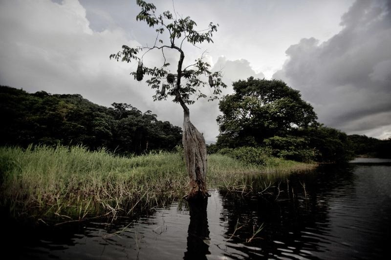

Cette splendide réserve naturelle grande de 100 000 hectares,
est un des lieux phares de la Guyane.



La Guyane est un vaste territoire, ce qui rend sa découverte longue et difficile.
Grâce à notre sélection, découvrez les meilleurs lieux de ce pays pour organiser votre séjour!